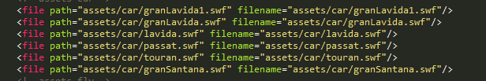

用python将文件夹里所有文件路径写入xml文件
项目实现功能
本项目主要是为简化更新包的数据打包。
程序可以批量提取文件夹中的文件名及扩展名，并将结果存储为xml格式，根目录不需要提取。支持所有文件类型。
例如：文件：bin/assets/car/granLavida1.swf
提取到xml文件为：< file path=”assets/car/granLavida1.swf” filename=”assets/car/granLavida1.swf” >
项目预期生成的xml文件如下图：

项目代码
本项目由github上Root_Jane组织成员远程协作完成。
代码贡献者：
- wantings: https://github.com/wantings
- Root-lee: https://github.com/Root-lee
项目地址：https://github.com/Root-Jane/filename_xml
项目代码如下：
1 | import os |
项目分析
本项目主要用到了python自带模块os中的函数os.walk进行文件夹所有文件的遍历，os.walk返回root、dirs、files三个值，其中：
- root变量类型是字符串，代表当前根目录的路径。
- dirs类型为list，是当前目录含有的所有子目录的合集。
- files类型也为list，是当前目录含有的所有文件的合集。
去除根目录路径用到strip函数，strip可以将一个字符串里某个特定的字符串删除，这里我们需要删除path变量代表的值。
为保持与linux的文件管理系统相兼容，我们使用replace函数将路径中的“\”替换成“/”。
最终结果写入xml文件。